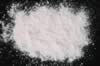

|
|
(For further information on spectroscopy, see:
http://speclab.cr.usgs.gov)
TITLE: Rhodochrosite HS67 DESCRIPT
DOCUMENTATION_FORMAT: MINERAL
SAMPLE_ID: HS67
MINERAL_TYPE: Carbonate
MINERAL: Rhodochrosite
FORMULA: MnCO3
FORMULA_HTML: MnCO3
COLLECTION_LOCALITY: Catamarca Provenee, Argentina
ORIGINAL_DONOR: Hunt and Salisbury Collection
CURRENT_SAMPLE_LOCATION: USGS Denver Spectroscopy Laboratory
ULTIMATE_SAMPLE_LOCATION: USGS Denver Spectroscopy Laboratory
SAMPLE_DESCRIPTION:
"C-6. Rhodochrosite. Catamarca Provenee, Argentina (67, hand-ground). Rhodochrosite, MnCO3, is a comparatively rare carbonate mineral, usually occurring in hydrothermal veins with ores of silver, lead and copper, and with other manganese minerals. Divalent iron and calcium substitute for manganese, and a complete solid solution series appears to extend to siderite and calcite. This particular sample displays the rich pink color in hand specimen that is typical of pure rhodochrosite. It is, however, very rare to find rhodochrosite free of iron, and this sample is no exception. It does, in fact, contain 1% iron, and displays a fairly strong ferrous ion band near 1.1µ, in addition to the typical near-infrared carbonate bands. The bands in the visible, on the other hand, are due to the manganese ion, and are unusually sharp electronic transition bands, as discussed and assigned in the previous section, entitled "Spectral Features of Carbonates"."
Hunt, G.R., J.W. Salisbury, 1971, Visible and near-infrared spectra of minerals and rocks: II. Carbonates. Modern Geology, v. 2, p. 23-30.
IMAGE_OF_SAMPLE:

END_SAMPLE_DESCRIPTION.
XRD_ANALYSIS:
Not Available
END_XRD_ANALYSIS.
COMPOSITIONAL_ANALYSIS_TYPE: None # XRF, EM(WDS), ICP(Trace), WChem
COMPOSITION_TRACE:
COMPOSITION_DISCUSSION:
END_COMPOSITION_DISCUSSION.
MICROSCOPIC_EXAMINATION:
END_MICROSCOPIC_EXAMINATION.
SPECTROSCOPIC_DISCUSSION:
END_SPECTROSCOPIC_DISCUSSION.
SPECTRAL_PURITY: 1b2b3b4_ # 1= 0.2-3, 2= 1.5-6, 3= 6-25, 4= 20-150 microns
| LIB_SPECTRA_HED: | where | Wave Range | Av_Rs_Pwr | Comment |
|---|---|---|---|---|
| LIB_SPECTRA: | splib04a r 4187 | 0.2-3.0µm | 200 | g.s.= |
| LIB_SPECTRA: | splib05a r 5902 | 0.2-3.0µm | 200 | g.s.= |
| LIB_SPECTRA: | splib06a r 19277 | g.s.= | ||
| LIB_SPECTRA: | splib06a r 19289 | g.s.= |
{kind=link}